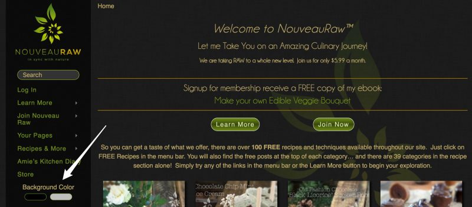
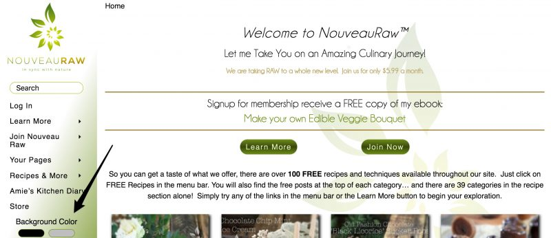

New Site Feature – Site Color Changer
Good afternoon everyone,
I am still taking care of my dad as he recovers from his quadruple coronary bypass. But soon I will be home and back in my recipe creating rhythm. If you are new and your not sure what I am referring to, please click (here) to read about my current situation. Thank you once again for ALL the love, support, prayers, and understanding. It means the WORLD to all of us.
In the meantime, when I have some quiet time while dad is resting, I have been working on some fun site stuff! For a long time now Bob and I have been looking for a system that we could integrate into NouveauRaw that would let a reader have control over the colors of the site. The reason that we started dabbling with this idea was that we had several people over the years voice their struggle with not being able to read light text on a black background.
Now with a push of a button, magic can happen! On the left menu bar, towards the bottom, you will see the words “Background Color” followed by a black button and a white button. Just push the buttons to select which color of background you wish to have for your NouveauRaw experience. Now come on, you have to admit that that is pretty darn exciting. :)
And here’s the Scoop on the ONE-TIME Popup.
In order to make everyone who visits the site aware of this feature, we have to do ONE popup. It’s not my first choice but we couldn’t figure out any other way to quickly notify all the members and visitors of this feature. It’s my heart to make Nouveau Raw an enjoyable, peaceful, and mouth-drooling experience., so for sure, this popup will only be experienced ONE time, then never to be seen again.
Let me know what you think. I love hearing from you. Have a blessed day, amie sue
Here’s the Classic Black Version

Here’s the New Crisp White Version

© AmieSue.com